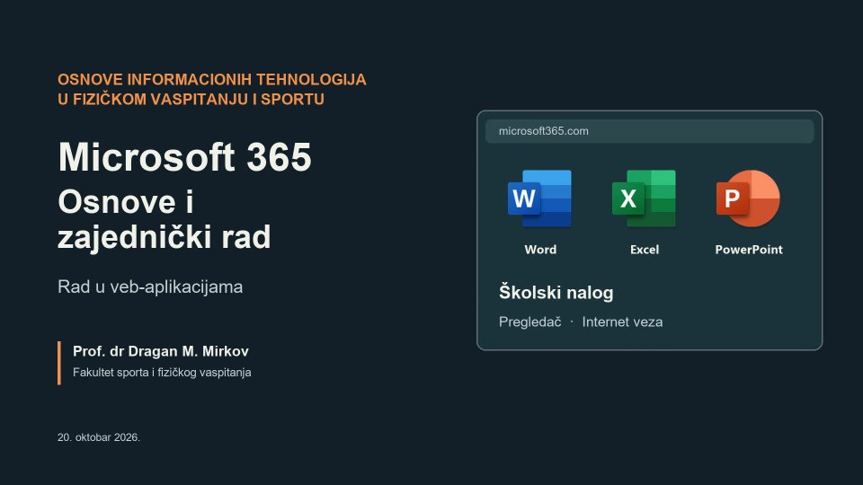
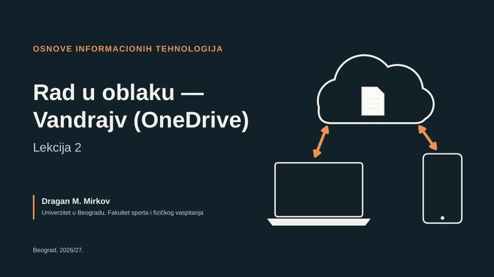
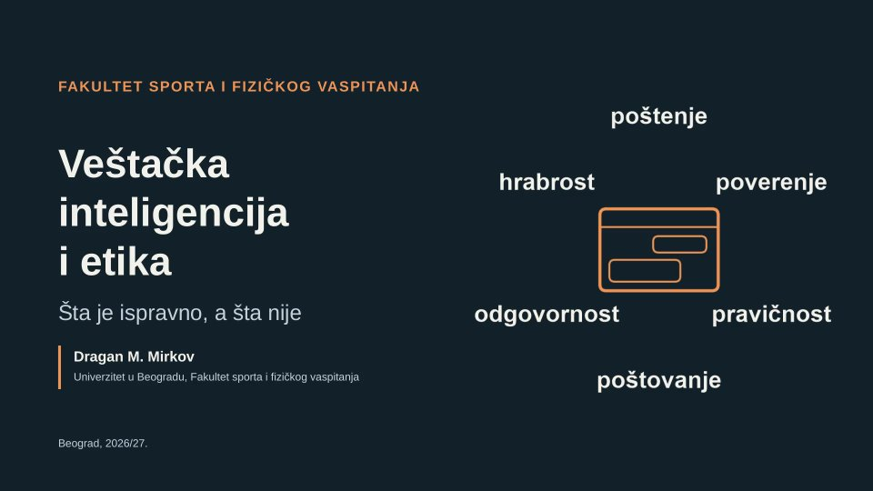

Osnovne i integrisane akademske studije
Osnove informacionih tehnologija u fizičkom vaspitanju i sportu
Kako se računar i alati Majkrosoft 365 (Microsoft 365) koriste u studiranju i u radu u fizičkom vaspitanju i sportu: rad u oblaku, obrada teksta, tabele, prezentacije, programi za analizu pokreta, bezbednost podataka i veštačka inteligencija.
Lekcije
video predavanjeuskoro
- Lekcija 1Majkrosoft 365 — osnove i zajednički radVideo 22:52

- Lekcija 2Rad u oblaku — Vandrajv (OneDrive)Video 7:54

- Lekcija 3Veštačka inteligencija i etika — šta je ispravno, a šta nijeVideo 7:53

- Lekcija 4Asistenti zasnovani na veštačkoj inteligenciji — pregled
- Lekcija 5Obrada teksta — Vord (Word)
- Lekcija 6Tabele — Eksel (Excel) u fizičkom vaspitanju i sportu
- Lekcija 7Izrada prezentacija — Pauerpoint (PowerPoint)
- Lekcija 8Mobilne aplikacije u fizičkom vaspitanju i sportu
- Lekcija 9Analiza kretanja na video-zapisu — Kinovea
- Lekcija 10Hardver, softver, mreže i bezbednost podataka
- Lekcija 11Veštačka inteligencija u sportu